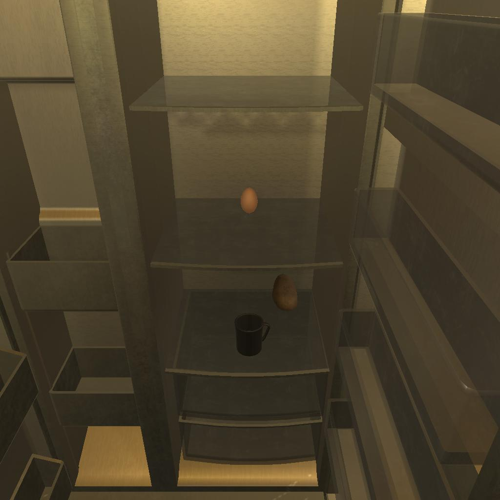

---------------------------------------------------------task: 29---------------------------------------------------------
--------------------------------------------------------------------------------------------------------------------------------------------------------------------
--------------------------------------------------------------------------------------------------------------------------------------------------------------------
Step:--------------------------------------------------------------------------17-------------------------------------------------------------------------------
----------------------------------------
VLM Prompt:
**Task**
Please perform as an embodied AI agent. Our final objective is to find two tomato and put them in countertop. Below is the plan for completing the task, the current observation, alongside historical data and admissible actions for the next step. Please determine the best action for the next step!
**Plan**
Below is a detailed step-by-step plan to complete the task.
1. Find a tomato.
2. Pick up the tomato.
3. Find a countertop.
4. Place the picked-up tomato on the countertop.
5. Find another tomato.
6. Pick up the tomato.
7. Return to the previous countertop.
8. Place the picked-up tomato on the countertop with the other tomato.
**Current Observation**
Displayed is an image capturing the current position of the agent.
Objects in The Image: ['egg', 'potato', 'cup']
**History Information**
Displayed are the previous observations with their corresponding actions.
State 0:
No history.
State 1:
1. Step Index in the Plan: 1
2. Objects: Tomato, Countertop, Kitchen Sink
3. Action: go to countertop 1
State 2:
1. Step Index in the Plan: 1
2. Objects: Microwave, Cabinet, Subway Tile Backsplash, Coconut, Metal Shaker, Chopstick
3. Action: go to countertop 2
State 3:
1. Step Index in the Plan: 1
2. Objects: Kitchen Counter, Cabinet, Subway Tile Backsplash, Frying Pan, Egg
3. Action: go to cabinet 1
State 4:
1. Step Index in the Plan: 1
2. Objects: Cabinet, Tile Backsplash
3. Action: open cabinet 1
State 5:
1. Step Index in the Plan: 1
2. Objects: Niche, Wall, Tiles
3. Action: go to cabinet 2
State 6:
1. Step Index in the Plan: 1
2. Objects: Stovetop, Pot, Toaster, Coconut, Kitchen Cabinet, Backsplash Tiles
3. Action: go to cabinet 3
State 7:
1. Step Index in the Plan: 1
2. Objects: Niche, Subway Tiles, Cabinet Door
3. Action: go to cabinet 4
State 8:
1. Step Index in the Plan: 1
2. Objects: Microwave, Cabinet, Tile Backsplash, Countertop, Potato, Chopstick, Metal Cup
3. Action: go to cabinet 5
State 9:
1. Step Index in the Plan: 1
2. Objects: Trash Can, Countertop, Microwave, Cabinet, Plunger
3. Action: open cabinet 5
State 10:
1. Step Index in the Plan: 1
2. Objects: Microwave, Trash Can, Plunger, Cabinet, Drawer, Countertop, Bread
3. Action: go to cabinet 6
State 11:
1. Step Index in the Plan: 1
2. Objects: Microwave, Glass, Salt Shaker, Kiwis, Knife, Trash Can, Cabinet, Muffin
3. Action: go to cabinet 7
State 12:
1. Step Index in the Plan: 1
2. Objects: Microwave, Potato, Chopsticks, Metal Cup
3. Action: open cabinet 7
State 13:
1. Step Index in the Plan: 1
2. Objects: Microwave, Cabinet, Potato, Chopstick, Metal Cup
3. Action: go to cabinet 8
State 14:
1. Step Index in the Plan: Unknown, searching for a tomato
2. Objects: Countertop, Cabinets, Toaster, Stovetop, Oven, Wall Tiles, Loaf of Bread
3. Action: open cabinet 8
State 15:
1. Step Index in the Plan: 1
2. Objects: Kitchen Counter, Toaster, Bread, Oven, Stovetop, Pan with Eggshells, Cabinet, Drawer, Knob
3. Action: go to fridge 1
State 16:
1. Step Index in the Plan: 1
2. Objects: Magnetic Letters, Refrigerator, Chair
3. Action: open fridge 1
State 17:
1. Step Index in the Plan: 1
2. Objects: Egg, Potato, Mug
3. Action: go to cabinet 20
**Admissible Actions**
(1): go to cabinet 1
(2): go to cabinet 2
(3): go to cabinet 3
(4): go to toaster 1
(5): go to cabinet 4
(6): go to cabinet 5
(7): go to microwave 1
(8): go to garbagecan 1
(9): go to countertop 1
(10): go to drawer 1
(11): go to cabinet 6
(12): go to cabinet 7
(13): go to drawer 2
(14): go to stoveburner 1
(15): go to stoveburner 2
(16): go to countertop 2
(17): go to cabinet 8
(18): go to cabinet 9
(19): go to cabinet 10
(20): go to drawer 3
(21): go to drawer 4
(22): go to stoveburner 3
(23): go to stoveburner 4
(24): go to cabinet 11
(25): go to cabinet 12
(26): go to cabinet 13
(27): go to cabinet 14
(28): go to sinkbasin 1
(29): go to sink 1
(30): go to cabinet 15
(31): go to cabinet 16
(32): go to cabinet 17
(33): go to cabinet 18
(34): go to cabinet 19
(35): go to diningtable 1
(36): go to coffeemachine 1
(37): open cabinet 20
(38): close cabinet 20
**Analysis Guideline**
1. Analyze the history and current observation, and then determine our current step in the plan and our current place.
2. List all visible objects related to the task in the current observation, without summarizing any as "various items."
3. Analyze the objects in the current observation based on the history and the requirements for the current step, and then determine if we can complete the step with the current observation.
4. Analyze and decide on the most appropriate action to take.
5. Summarize the analysis using the following format: "Analysis: [The summarization of the analysis], The Most Appropriate Action: (i which is the integer.): [Selected action]"
**Notes**
1. We must complete each step of the plan in order and cannot skip steps when the previous ones are not finished.
2. For "Go to" actions listed as "go to xxx [n]", interpret this as there are n distinct actions available: "go to xxx 1", "go to xxx 2", ..., "go to xxx n". Select one specific action from these options instead of using "go to xxx [n]".
3. If receptacles such as drawers, cabinets, and so forth are closed in the current observation, we may try to open them.
4. Pay attention to synonyms and ensure clarity in the terms used.
5. We must determine and provide the single action which must be in the **Admissible Actions**.
6. If there is no history available, we are at the first step and the current place is "Unknown".
**Answer**
Please select the most suitable action by following the **Analysis Guideline**, keeping the above **Notes** in mind.
----------------------------------------
----------------------------------------
VLM Response:
Analysis: We are currently at step 1 of the plan, which is to find a tomato. The current observation does not show any tomatoes, only an egg, a potato, and a cup. Based on the historical data, we have already searched numerous cabinets and other locations but have not yet found a tomato. Since the tomato has not been located in the previously searched areas, we should continue to systematically search the remaining areas. The historical data indicates that we have already attempted to open cabinet 20, which is the last cabinet we approached. To continue our search for a tomato, we should execute an action that allows us to explore a new area or a previously unopened cabinet or drawer.
The Most Appropriate Action: (37): open cabinet 20
----------------------------------------
----------------------------------------
>>> Refine VLM Response and Get Pure Action: open cabinet 20
----------------------------------------
-----------------------------------------------------------------
Running time: 7.744783878326416 seconds
Total Money: 0
-----------------------------------------------------------------
-----------------------------------------------------------------
Summarization Prompt:
**Context**
Analysis: Since there is no history information, we are at the first step in the plan, which is to find a statue. The current place is unknown. In the current observation, we see a floorlamp next to an armchair with a small table that has a small object on it, which could potentially be the statue we are looking for. Since the plan requires us to find a statue first and it appears there might be one on the table next to the armchair, we should investigate this object to determine if it is the statue we need.
The Most Appropriate Action: (1): go to armchair 1
**Summary**
1. Step Index in the Plan: 1
2. Objects: Floorlamp, Armchair, Small Table, Small Object (potential statue)
3. Action: go to armchair 1
**Context**
Analysis: We are currently at step 1 of the plan, which is to find a tomato. The current observation does not show any tomatoes, only an egg, a potato, and a cup. Based on the historical data, we have already searched numerous cabinets and other locations but have not yet found a tomato. Since the tomato has not been located in the previously searched areas, we should continue to systematically search the remaining areas. The historical data indicates that we have already attempted to open cabinet 20, which is the last cabinet we approached. To continue our search for a tomato, we should execute an action that allows us to explore a new area or a previously unopened cabinet or drawer.
The Most Appropriate Action: (37): open cabinet 20
Please summarize the context by following above examples when providing the summary, and ensure that only the summary is included, without any extra explanation.
**Summary**
-----------------------------------------------------------------
-----------------------------------------------------------------
Summarization Response:
1. Step Index in the Plan: 1
2. Objects: Egg, Potato, Cup
3. Action: open cabinet 20
-----------------------------------------------------------------
-----------------------------------------------------------------
Text Observation:Nothing happens.
-----------------------------------------------------------------
UNSUCCEED